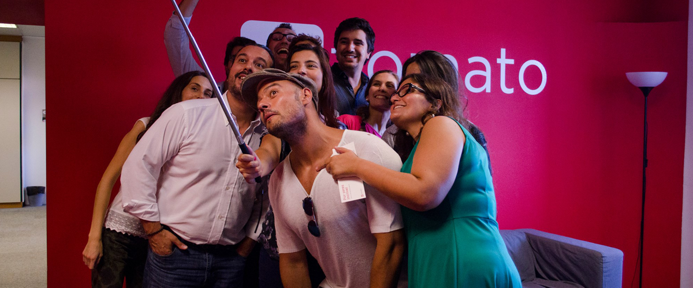

Get the App
Order Food

Let's talk about happiness
I have been in Zomato for over a year now and I have been profoundly happy. That’s a very generic word, isn’t it? Happy. (More on that later.) At first, I had a feeling that this is a honeymoon period and with time, the enthusiasm will run out and it will become any other job (any other job: not really motivated on a Monday morning to wake up and hit the ground running and also having the occasional thought, what the f*** am I doing with my life?). At Z, things have gotten only better with time for me. I am engaged both at work and at home. This is not to say I don’t have bad days. But overall, I am content and loving my life. I have a phrase for this feeling — being in my zone. Let me explain a bit about what I think makes me happy. A raise, a promotion, appreciation from peers all have short-lived impact. For a few days, you feel awesome and then you are back to the same old feeling of what-am-I-doing. What I have learnt over the years is that I am happy when I feel I am totally at the brink of my capability — physical or mental. For instance, when I play squash, I am glad the day I put a strong fight against a better player. The outcome in this case does not matter. Of course, I will be more than glad to win against every player, but given a choice I would like to fight and lose against a tough player than win over a not-so-good player. The same principle applies to me at work. I would like to fight tough problems and sometimes lose than fight against incremental issues. I am happy when I am stretched and challenged to grow. So now that I have told you about my concept of happiness, let me now try to capture why I think my happiness has something to do with Z’s culture than my current role or context. Let’s rewind and go back to my first day at Z. At around 5pm, Miski walks up and calls everyone’s attention in the 4th floor. The ask was simple: we are terribly behind on getting our merchant hardware for the Order Online business ready, so please come and help get it done. For the next 4 hours, I was standing along with folks from various teams and installing our Z merchant app on smartphones. The message was clear: it doesn’t matter what the task is, if it is important for Z, it is important for all. You don’t get defined by your role, you get defined by the initiative you take. Get sh*t done. You don’t need to worry about all the roadblocks — defined roles (it’s not my job), responsibilities (not my pay grade or that’s too tactical), incentives (I am not going to be paid for it) etc. I have seen these problems in so many firms I have worked with earlier. It is such a pain in just getting folks to do what matters and is important. Organisations raise so many artificial barriers to getting people to do what’s actually required on a given day. Z is great at it. There is no hesitation in asking folks to go do something different than their regular role and stretch. People are asked and expected to step up and get it done. This obviously is not easy. You are always worried and concerned that there is so much stuff to do and fix. But the upside is you never feel bored or under-utilised. You have complete independence to pick up as much as you can. The limits are set by you and not an artificial 6 month or yearly performance review. This is not to say I don’t get timelines or targets, it is just that they are always obvious or something I was already thinking about. To me, being in the zone is the key. It’s the same feeling you get when you are with your better half; you know what s/he is thinking and you know what they expect from you. You don’t need to be told what is what. Now coming back to the aforementioned H-word, I feel utilised. Not in a utilitarian basis, but at a conscious level. I feel like I am building something substantial and that I am adding real value. I am not just completing a set of to-do, I am fully invested and own what I am doing and the outcome. I don’t do things because they have to be done, I do things because they need to be done. And this is what makes me happy. Everyday.